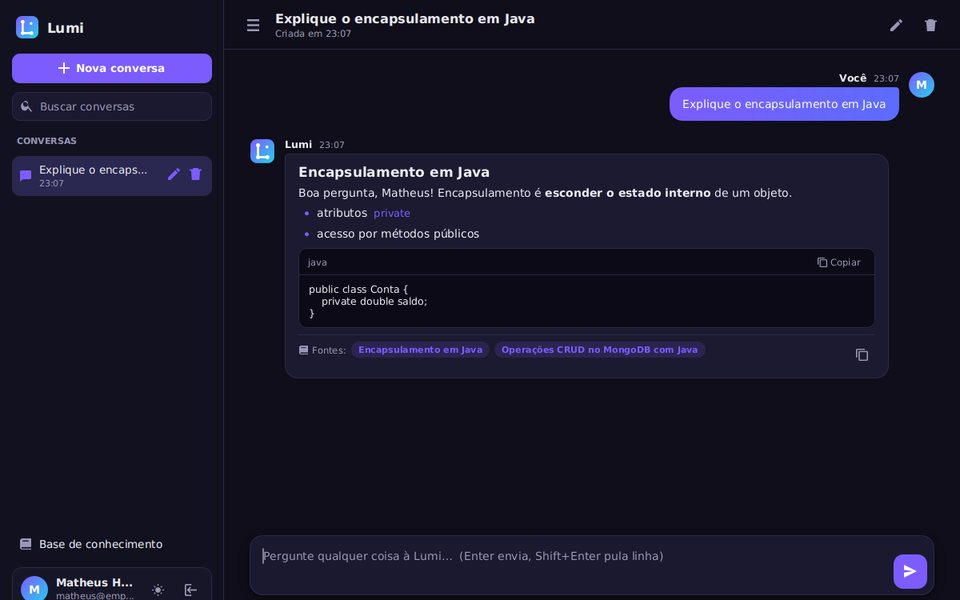
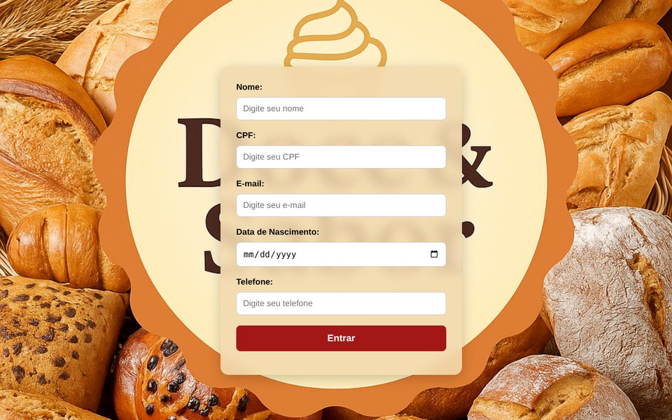

01 / Back-End
 Java
Java Spring Boot
Spring Boot- Spring Security
- Spring Data JPA
- Node.js + Express
- JavaFX
<Desenvolvedor Back-End/>
Construo APIs e sistemas com Java, Spring Boot e Node.js, com atenção especial à segurança e à arquitetura.
01 Sobre mim
Tenho 18 anos, moro no Gama, no Distrito Federal, e há mais de dois anos transformo curiosidade em código. Concluí o curso Técnico em Desenvolvimento de Sistemas no Senac e estou no 3º semestre de Engenharia de Software na UniCEPLAC. Meu foco é o back-end: APIs REST com Java, Spring Boot e Node.js, bancos de dados bem modelados e sistemas que já nascem pensando em segurança. Já coordenei equipes em projetos integradores e busco minha primeira oportunidade de estágio ou emprego para evoluir em projetos reais.
0+
anos programando
0
formações em TI
0+
projetos publicados
02 Stack
01 / Back-End
02 / APIs & Auth
03 / Bancos de dados
04 / Front-End
05 / Ferramentas
03 Projeto em destaque
Portal de participação cidadã onde moradores do DF registram problemas urbanos — buracos, iluminação, lixo, transporte — marcam o local exato no mapa e acompanham o andamento de cada solicitação.


04 Mais projetos

Desktop · IA · 2026
Assistente de IA para empresas com login, conversas por usuário e RAG: cada resposta mostra os documentos da base de conhecimento usados como fonte. Animação de entrada em GSAP e instalador para Windows.
Ver código →Web · Projeto Integrador Senac · 2026
Rede social de informação cívica: busca de políticos com fontes oficiais, FatoBot (IA com referências) e comunidades. Coordenei a equipe de 9 pessoas, revisei os pull requests e cuidei da hospedagem.
Repositório privado da equipe

API REST · Senac · 2025
Sistema de gestão de padaria com cadastro de produtos, clientes e compras. Duas versões: uma relacional com H2 e Spring Security (BCrypt) e outra com MongoDB.
05 Formação
Cursando · 3º semestre
UniCEPLAC — Centro Universitário do Planalto Central
Engenharia de requisitos, arquitetura de sistemas e governança de TI, com projetos integradores em equipe, como o Brasília Participa.
Concluído · 2026
Senac — Distrito Federal
Lógica de programação, Java, bancos de dados, desenvolvimento web e boas práticas de software, finalizando com o Projeto Integrador Fato Real.
Contínuo
Alura · Udemy
Java, Spring, Git e Segurança da Informação.
06 Contato
Procuro estágio ou primeira oportunidade como desenvolvedor. Me chama!
matheus.henrique.madeira1@gmail.com